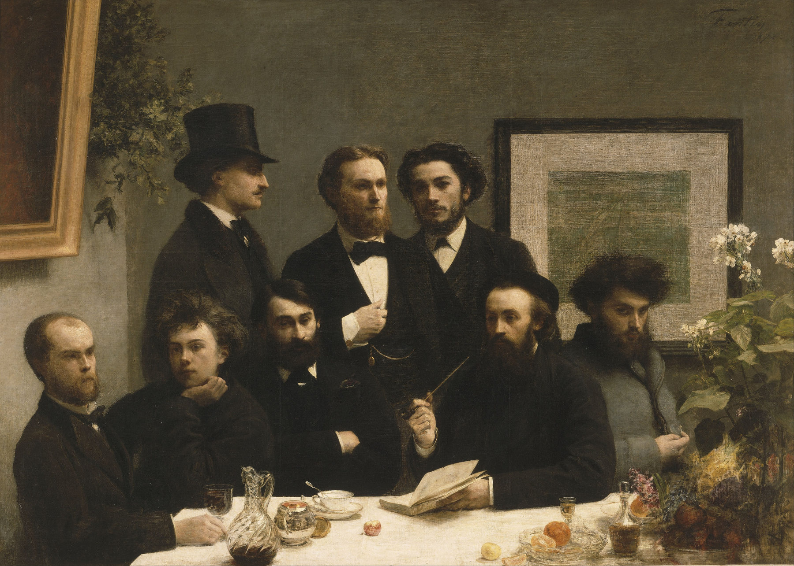
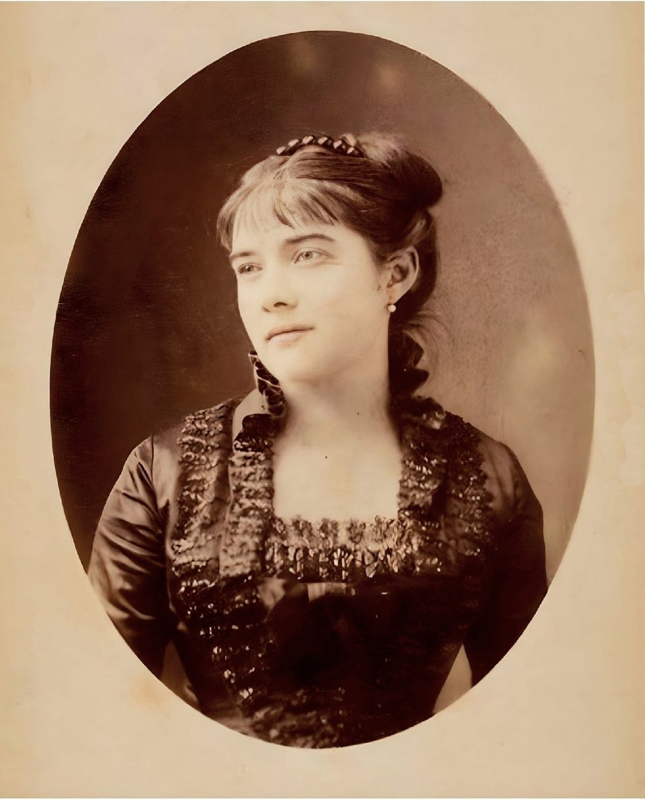
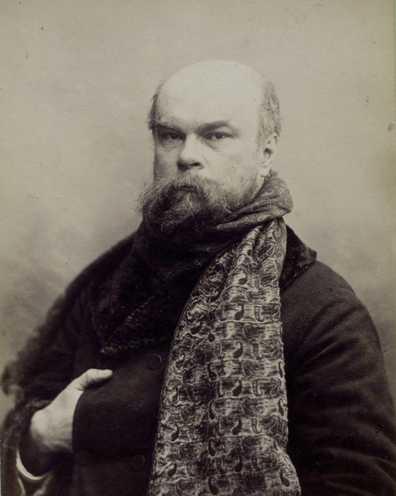
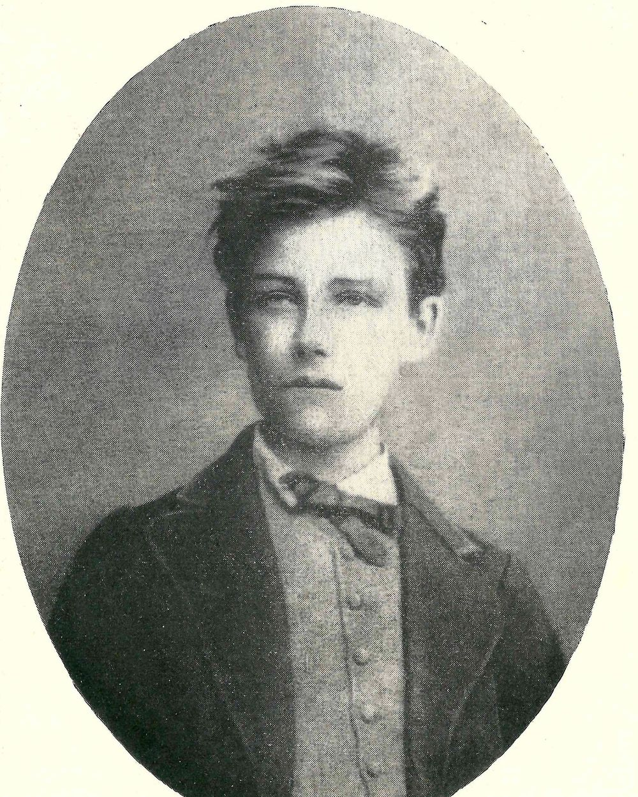
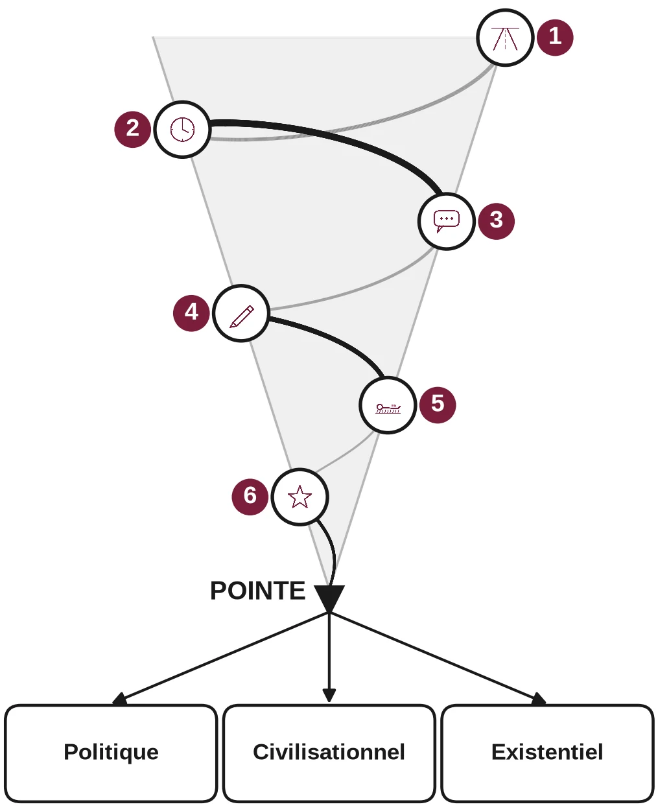

Lettres · Première · Lycée général et technologique
Rimbaud, Cahier de Douai
Partir à seize ans. Huit séances pour lire cinq poèmes, suivre la spirale de Gorse, et préparer le bac de français.
Valable pour le programme 2026-2027 : œuvre au programme, parcours « émancipations créatrices », objet d'étude « La poésie du XIXe siècle au XXIe siècle ».

Présentation
Arthur Rimbaud copie, en 1870, vingt-deux poèmes dans le Cahier de Douai, dit aussi Recueil Demeny. La séquence s'arrête sur cinq d'entre eux, reproduits en entier d'après l'édition Vanier de 1895 : « Sensation », « Roman », « Le Dormeur du val », « Au Cabaret-Vert » et « Ma Bohème ».
Huit séances de 55 minutes, prévues sur 52, mènent à une introduction et une partie de dissertation, puis à un oral blanc. Chaque élève construit un classeur, une pochette par poème. Les signaux de classe servent tout au long : un code couleur, rien n'est écrit sur l'ardoise.
On part d'une question simple : qu'est-ce qui donne envie de partir ? On évite deux pièges : lire le recueil comme une biographie, et faire de Rimbaud un poète qui casse tout. Les formes sont tenues. La liberté se joue à l'intérieur.
Et si la dissertation tombe sur Rimbaud ?
Fiche méthode, brouillon en spirale de Gorse, deux copies modèles. Une méthode pour l'écrit du bac de français, à partir du Cahier de Douai. Vingt pages, pour les Premières du lycée général et technologique.
Cette fiche porte sur Rimbaud. Pour préparer la dissertation et l’essai sur l’ensemble de l’épreuve, voir aussi Dissertation et essai : les épreuves du bac en marche.
L'autre côté de la légende : Mathilde Mauté



L'histoire de Rimbaud et de Verlaine est souvent racontée comme celle de deux poètes maudits. On oublie presque toujours Mathilde Mauté, qui vivait sous le même toit.
Née le 17 avril 1853, elle croise Verlaine, ami de son demi-frère Charles de Sivry, vers 1868, à quatorze ans, et le trouve laid et mal habillé. C'est en 1869, à seize ans, qu'il s'éprend d'elle. Ils se marient le 11 août 1870 : elle a dix-sept ans, lui vingt-six. Verlaine lui dédie La Bonne Chanson.
En septembre 1871, Arthur Rimbaud, seize ans, arrive à Paris. La famille Mauté l'héberge un temps, rue Nicolet. Verlaine se remet à boire. Huit jours avant la naissance de leur fils Georges, le 30 octobre 1871, il devient violent envers Mathilde. En juillet 1872, il part avec Rimbaud. Mathilde ne le reverra plus, et Georges, nourrisson, ne verra presque plus son père.
Dans ses Mémoires de ma vie, publiés en 1935, Mathilde résume ces deux années : « Un an de paradis, un an d'enfer. » Son témoignage, longtemps relégué, interroge la voix que l'histoire littéraire choisit de garder. Les écrivains ont souvent des parcours atypiques. Un cours de littérature n'est pas un cours de morale ni de religion : on y interroge le lien, ou l'écart, entre une œuvre et une vie, sans dicter une conclusion.
Pour aller plus loin. Hélène Mathieu et Daniel Grandclément, Madame Verlaine, Éditions Phébus, 2026, ISBN 978-2-7529-1543-6. Page de l'éditeur.
Questions
- À l'oral. Quelle voix l'histoire littéraire a-t-elle longtemps retenue, et laquelle a-t-elle laissée de côté ? Qu'est-ce que cela change, selon vous, dans la manière de lire Rimbaud et Verlaine ? Vous pouvez commencer ainsi : « À mon avis, ... parce que ... »
- À l'écrit. Le talent d'un écrivain garantit-il l'intégrité de l'homme ? Vous pouvez commencer ainsi : « À mon avis, ... parce que ... »
- À l'oral ou à l'écrit. En vous appuyant sur les deux tableaux ci-dessous, que vous inspire le lien, ou l'écart, entre une œuvre et une vie ? Vous pouvez commencer ainsi : « En lisant ces tableaux, je me demande si ... »
Tableau 1. L'œuvre et l'homme
Faits documentés, formulés de manière neutre. Le tableau n'invite pas à juger les œuvres, mais à interroger le rapport entre un texte étudié au lycée et des faits établis de la biographie.
| Auteur | Œuvre étudiée au lycée | Ce que l'on reproche à l'homme | Source |
|---|---|---|---|
| Paul Verlaine | Fêtes galantes, Romances sans paroles | Violences conjugales envers Mathilde Mauté, retenues notamment par le jugement de séparation de corps du 24 avril 1874 ; le 10 juillet 1873, à Bruxelles, il blesse Rimbaud d'un coup de revolver. | BnF Essentiels ; Larousse ; acte de la séparation, Gazette Drouot |
| Jean-Jacques Rousseau | Émile ou De l'éducation, Les Confessions | Dans Les Confessions, il reconnaît avoir fait déposer aux Enfants-Trouvés les cinq enfants qu'il a eus avec Thérèse Levasseur (vers 1745-1751). | BnF Essentiels, « Rousseau en 30 dates » |
| Louis-Ferdinand Céline | Voyage au bout de la nuit | Auteur de pamphlets antisémites (Bagatelles pour un massacre, 1937 ; L'École des cadavres, 1938 ; Les Beaux Draps, 1941). Sous l'Occupation, il fréquente les milieux de la collaboration et intervient dans la presse de l'époque. | France Culture ; Universalis |
| Jean-Paul Sartre | Huis clos, L'Existentialisme est un humanisme | Compagnon de route du Parti communiste au début des années 1950 (Les Communistes et la paix, 1952) ; il condamne l'intervention soviétique en Hongrie et rompt avec le PCF en 1956. À partir de 1970, il s'associe aux maoïstes français, notamment en acceptant la direction de La Cause du peuple. Des relations du couple Sartre-Beauvoir avec de très jeunes femmes, dont d'anciennes élèves, sont documentées par la correspondance et des témoignages. | Exposition BnF, Sartre et le PCF ; chronologie BnF ; Retronews / BnF, affaire Sorokine, 1941-1943 |
| Robert Brasillach | Notre avant-guerre (parfois abordé comme document d'époque) | Rédacteur en chef de l'hebdomadaire Je suis partout (1937-1943). Condamné à mort pour intelligence avec l'ennemi le 19 janvier 1945, fusillé le 6 février 1945. | Notice BnF ; Fondation Charles de Gaulle |
| Pierre Drieu la Rochelle | Gilles | En 1940, il prend la direction de La Nouvelle Revue française sous l'Occupation. Une lettre du service allemand de la Propagande, le 28 novembre 1940, voit en lui une garantie pour propager l'idée d'une collaboration entre la France et l'Allemagne. | BnF Essentiels, lettre du 28 novembre 1940 |
Tableau 2. Quand la vie explique l'œuvre
Ce second tableau n'est pas un répertoire de faits blâmables. Il rassemble des circonstances de vie, parfois très différentes, qui aident à comprendre une œuvre, un rythme d'écriture ou un thème.
| Auteur | Œuvre étudiée au lycée | Ce que la vie éclaire dans l'œuvre | Source |
|---|---|---|---|
| Honoré de Balzac | La Comédie humaine (Le Père Goriot, Eugénie Grandet, etc.) | Après la faillite de son imprimerie, il a près de 100 000 francs de dettes dès 1828. Il écrit à un rythme intense, souvent la nuit, pour payer ses créanciers, et se ménage une issue pour échapper aux huissiers (porte dérobée de la maison de Passy). Une grande partie de l'œuvre paraît d'abord en feuilleton : un contrat de 1839 avec La Presse prévoit un paiement par feuilleton, calculé sur un nombre fixe de colonnes et de lignes. Le café fait partie de ce régime de travail. La légende des 10 litres, ou des 50 tasses par jour, n'est pas établie. Dans sa correspondance, Balzac évoque notamment trois tasses, et une livre de café moka en huit jours, soit environ 60 grammes par jour. | BnF Essentiels, « Balzac en 30 dates » ; contrat avec La Presse, 16 avril 1839 ; France Inter, maison de Passy ; enquête ActuaLitté sur le café ; étude Bentolila, SERD, correspondance |
| Victor Hugo | Les Contemplations (dont « Demain, dès l'aube ») | Du 18 juillet au 12 septembre 1843, il voyage en Espagne et dans les Pyrénées avec Juliette Drouet, tandis qu'il est marié à Adèle Foucher. Le 4 septembre 1843, sa fille Léopoldine se noie à Villequier, avec son mari Charles Vacquerie. Hugo l'apprend le 9 septembre, au Café de l'Europe à Rochefort, en lisant Le Siècle. | Chronologie Juliette Drouet, Université de Rouen ; Ville de Rochefort |
| George Sand | La Mare au diable, La Petite Fadette, François le Champi | Née Aurore Dupin, elle vit de sa plume, élève ses enfants et mène une vie indépendante, contraire aux normes alors imposées aux femmes. Elle a notamment une liaison avec Alfred de Musset, puis une relation de près de dix ans avec Frédéric Chopin, à Paris, Majorque et Nohant. | BnF Essentiels, « George Sand, vivre de sa plume » ; BnF Essentiels, portrait |
Les cinq poèmes
- Sensation Le départ est promis, au futur : « j'irai loin, bien loin ».
- Roman Qui parle : un adolescent, ou un poète qui joue à l'adolescent ?
- Au Cabaret-Vert Un sonnet peut-il être libre ? Le quotidien entre dans la forme fixe.
- Le Dormeur du val La douceur du val mène aux « deux trous rouges » : la guerre de 1870 entre dans le recueil.
- Ma Bohème La pauvreté devient poésie. Le ciel se fait auberge, à la Grande Ourse.
Les cinq textes sont dans la séquence, prêts à imprimer, un poème par page. Les élèves sont aussi interrogés sur l'œuvre entière.
La spirale de Gorse
Elle lance la séquence. Ce n'est pas tout le cours. Six tours mènent d'une question générale à un vrai problème. La question est à l'extérieur, la réponse attendue à l'intérieur. À la pointe, un problème : politique, civilisationnel ou existentiel. Ensuite, chaque séance suit son propre déroulé.

- 1 Qu'est-ce qui donne envie de partir ? Sentir, marcher, ne plus être tenu. Pas forcément fuir.
- 2 Pourquoi « Sensation » est-il écrit au futur ? Le départ est d'abord rêvé : « j'irai ». Une promesse.
- 3 Qui parle : un adolescent, ou un poète qui joue à l'adolescent ? Un « je » qui se met en scène, avec humour et distance.
- 4 Comment un sonnet peut-il sembler si libre ? Rejets, mots familiers : la forme fixe tient, mais elle est bousculée.
- 5 « Le Dormeur du val » chante-t-il la paix de la nature ? Non : la douceur mène aux « deux trous rouges ».
- 6 Écrire, est-ce déjà être libre ? La pauvreté devient rime : la liberté passe par les mots.
À la pointe. Peut-on se libérer par la poésie quand le monde, lui, reste en guerre et en manque ?
Les figures de style
Une fiche de onze figures prises dans le corpus, une figure du jour à chaque séance, des exercices corrigés et des amorces pour les commenter. Règle commune : nommer, citer, dire l'effet.
- Comparaison : « comme un bohémien » (« Sensation »).
- Métaphore : « Mon auberge était à la Grande-Ourse » (« Ma Bohème »).
- Personnification : « où chante une rivière » (« Le Dormeur du val »).
- Apostrophe : « Nature, berce-le chaudement » (« Le Dormeur du val »).
- Euphémisme : « il fait un somme » (« Le Dormeur du val »).
- Antithèse : « chaudement » / « il a froid » (« Le Dormeur du val »).
- Hyperbole : « la chope immense » (« Au Cabaret-Vert »).
- Anaphore : « Vous êtes amoureux. » (« Roman »).
- Énumération : « Un soldat jeune, bouche ouverte, tête nue » (« Le Dormeur du val »).
- Hypallage : « mes souliers blessés » (« Ma Bohème »).
- Allitération : « Les parfums ne font pas frissonner sa narine » (« Le Dormeur du val »).
Pour commenter : « En comparant… à…, le poète suggère que… » « La métaphore “…” transforme… en… » « Cette figure n'est pas un ornement : elle permet au lecteur de… »
Les huit séances
- Pourquoi partir ? « Sensation » · la négation · évaluation diagnostique
- Qui parle : un adolescent, ou un poète qui joue à l'adolescent ? « Roman » · la phrase non verbale
- Un sonnet peut-il être libre ? « Au Cabaret-Vert » · la relative
- « Le Dormeur du val » chante-t-il la paix de la nature ? « Le Dormeur du val » · relative et inversion · évaluation intermédiaire
- La pauvreté est-elle une misère, ou une richesse de poète ? « Ma Bohème » · l'apposition
- De quoi se libère-t-on ? Les cinq poèmes · la question
- Lire, expliquer, analyser : l'oral Un poème au choix · la proposition · oral blanc en binôme
- La liberté, est-ce seulement partir ? Les cinq poèmes · leur, leurs · évaluation sommative
Téléchargements
Quatre documents, chacun en PDF, Word et LibreOffice. Vous pouvez utiliser et adapter ces documents en citant leur autrice, sans usage commercial, et en partageant vos versions dans les mêmes conditions. CC BY-NC-SA 4.0.
-
Et si la dissertation tombe sur Rimbaud ? Fiche méthode (20 pages)
PDF Word (.docx) LibreOffice (.odt) -
Séquence (98 pages)
PDF Word (.docx) LibreOffice (.odt) -
Fiche professeur (5 pages)
PDF Word (.docx) LibreOffice (.odt) -
Fiche de correction (6 pages)
PDF Word (.docx) LibreOffice (.odt)
Madame Carole Paoli Pompougnac
Henri Fantin-Latour, Un coin de table, 1872, musée d'Orsay, domaine public. Portraits : Alphonse Liébert, Mathilde Mauté, vers 1870 ; Otto Wegener, Paul Verlaine, 1893 ; Étienne Carjat, Arthur Rimbaud, octobre 1871, domaine public. Schéma de la spirale et pictogrammes : illustrations originales.